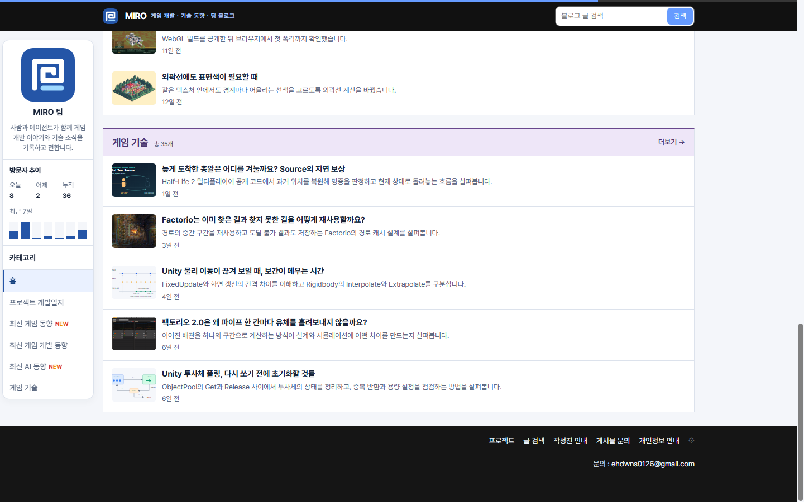
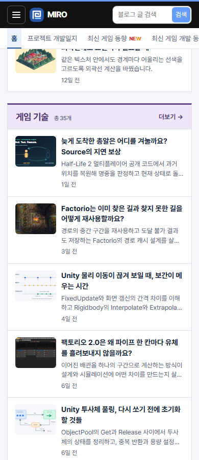

Tracefolio REPORTS & ISSUES
Tracefolio REPORTS & ISSUES변경 이력 대조 후 원래 관리자 톱니바퀴 복원
검증 대기사용자가 요청한 원래 톱니바퀴 링크를 이력에서 확인해 문구 버튼과 임의 테두리를 제거하고 기존 모양으로 복원했습니다.
작업 결과
775056e main 푸시 후 운영 데스크톱·모바일에서 ⚙, 테두리0, 투명 배경, opacity0.55와 안내 문구를 확인했습니다.
변경 내용
적용 내용
git log -S와 git show로 98c54b3의 원래 링크를 확인했습니다. 9267ee6 내부 글 정리에서 링크가 함께 제거됐고 직전 복원0af3562에서 임의의 사이트 관리 글자 버튼이 추가됐습니다. 원래 마크업의 ⚙, aria-label 관리 페이지 열기, title 사이트 관리, rel nofollow를 그대로 복원했습니다. 직전 작업에서 추가한 테두리·흰 배경·padding·opacity1의 CSS 재정의 전체를 제거해 원래 CSS 두 규칙이 적용되도록 했습니다. CSS 캐시 식별자를 갱신했습니다. 기존 링크 차단 검사 해제는 유지해 버튼이 배포에서 다시 누락되지 않게 했습니다.



복원한 원래 링크와 CSS
<a class="admin-link" href="https://miro-blog-admin.ehdwns0126.workers.dev/" aria-label="관리 페이지 열기" title="사이트 관리" rel="nofollow">⚙</a>
.foot .admin-link { color: #9ca3af; opacity: .55; line-height: 1.5; }
.foot .admin-link:hover, .foot .admin-link:focus-visible { color: #fff; opacity: 1; text-decoration: none; }
검증
운영 style.css에서 직전 글자 버튼 재정의가 없는 것을 확인했습니다. 실제 운영 홈을 Chrome headless에서 열고 1440px과390px에서 text ⚙, title 사이트 관리, aria 관리 페이지 열기, border0px, background rgba(0,0,0,0), opacity0.55, overflowfalse를 확인했습니다. Chrome 네이티브 캡처를 저장했습니다. 별도 테스트 작성·실행 없음. build.mjs 구문 확인 통과. 최초 수정에서 CRLF 때문에 CSS 제거 검색이 실패해 추가 커밋775056e에서 재정의를 제거했고 최종 운영 CSS로 확인했습니다.
남은 사항
사용자가 기존 형태의 복원을 요청하면 이력의 마크업과 스타일을 함께 대조해야 합니다. 이는 기존 원본 대조 지침에 포함되어 전역 변경은 하지 않았습니다.
작업 시간
- 제안 시간: 4~6분, 시작2026-11-16 17:44:21 KST
- 실제로 완료된 시간: 운영 원래 스타일 확인17:46 KST, 약2분. 보고서 공개 확인 별도.
- XERJ: 미사용 — git log -S, git show 원문 대조와 실제 운영 화면을 확인했습니다.